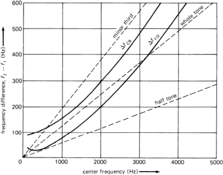
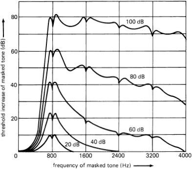

Lecture 9: Loudness
Chapter 10
PHYS170 - Duquesne University
2/7/23
Announcements
- Homework 3 is up on Canvas.
- Due Thursday evening
- Please submit only one PDF file for your whole assignment.
- On Thursday I’ll announce the group project that will be your “final exam” for the course
- Groups must have 3 or 4 people. Start thinking about who you want to work with.
Daily Quiz
Review
Definitions of Intensity and Loudness
- Intensity is a measure of how much sound energy passes through a surface in a certain amount of time (power per area).
- This is an objective description of sound that we can measure with a machine (e.g. with a sound meter).
- Loudness (or “volume”) is the human perception of sound intensity.
- It is a subjective description of sound as heard by each listener.
- Dynamics markings in a musical score (forte, piano, etc.) indicate loudness.
- Because each listener may hear something different (e.g. because of age or medical condition), loudness is harder to describe precisely.
- We’ll come back to loudness in the next chapter to talk about how an average adult human perceives intensity and the different factors that affect loudness.
Energy, Power, and Intensity
- Energy (E) is the capacity to do work. It is measured as joules (J), which the book also calls newton-meters (N m).
- Power (P) is the rate at which energy is emitted or absorbed. Power is measured in watts (W), which is also joules per seconds.
- Intensity (I) is the amount of power divided by the area it passes through, measured in watts per square-meter (W/m2).
\[P = IA\]
Decibels
To avoid writing very small and very large numbers (lots of zeros or decimals points) to represent quantities with a lot of dynamics range, engineers often use a logarithmic scale called decibels (dB) to express ratios.
The mathematical definition of decibels is
\[\text{decibels} = 10 \log\left(\frac{\text{measurement value}}{\text{reference value}}\right),\]
where “log” is the common (base-10) logarithm function found on a calculator.
If we’re given the decibel level and we need the measurement value, we solve the equation above to get
\[\text{measurement} = \text{reference value} \times 10^{\text{decibels}/10} \]
Sound intensity levels (SIL)
The reference value for a decibel conversion is usually something agreed upon by the community. For example, when measuring sound intensity, the reference value is taken as the threshold of hearing for a typical adult human: I0 = 10-12 W/m2, giving us the following definition for Sound Intensity Level (SIL), measured in decibels:
\[S_{IL} = 10 \log(I/I_0)\]
or, flipping this around to solve for intensity:
\[I = I_0 \times 10^{S_{IL}/10},\]
where for sound, I0 = 10-12 W/m2 by definition.

Intensity, pressure, and impedance
Lions and Tigers and Bears! Oh my!
Pressure
We need the link between changes in air pressure and the sound intensity to define the various measures of loudness in this chapter.
Pressure is the force per unit area applied to a surface. It has units of newtons per square-meter, also called “pascals” (Pa). Standard atmospheric air pressure is 101325 Pa. Sound waves in air are a very small change in this number.
Pressure change (p) is a useful description of sound because most sound-detection devices use pressure as the mechanism to do the detection.
- Our eardrums move because of the air pressure fluctuations, which then move the small bones in the middle ear.
- Most microphones use a similar effect, converting pressure to an electrical signal (voltage or current).
The smallest pressure change that humans can hear is called p0 and equals
\[ p_0 = 2\times 10^{-5}\,\mathrm{Pa} = 20 \mathrm{\mu Pa}.\]
Pressure, intensity, impedance
Last time we used intensity (I) as our measure of sound. The relationship between intensity and pressure depends on details like the material and geometric details, which we call the acoustic impedance (z).
The units of impedance are pascals-seconds per meter (Pa s/m), also called “rayl”.
If the impedance is known, intensity and pressure are related by the equation
\[ I = \frac{p^2}{z} \]
Nominal acoustic impedance
For air at room temperature and pressure and in a large room away from any walls, the value of this impedance is called z0:
\[ z_0 = 413\,\mathrm{rayl} \]
By comparison, the impedance of water at room temperature is about zwater=1.5×106 rayl.
Example: Thresholds of hearing
Recall from last time that the minimum sound intensity a typical adult human can hear is I0=10-12 W/m2 at 1 kHz. This compare this to what we get from the minimum pressure (p0=2×10-5 Pa) and the impedance of air (z0=413 Pa s/m).
\[\frac{p_0^2}{z_0} = \frac{(2\times10^{-5}\,\mathrm{Pa})^2}{413\,\mathrm{Pa\,s/m}} = 9.7\times10^{-13}\,\mathrm{W/m^2}.\]
Rounding this up we get 1×10-12 W/m2, which is the value we called I0.
More decibels
From last time our conversion from intensity I to sound intensity level in decibels (SIL) was
\[ S_{IL} = (10\,\mathrm{dB}) \log\left(\frac{I}{I_0}\right).\]
There is also a decibel measure for pressure, called sound pressure level (SPL) with a slightly different formula:
\[ S_{PL} = (20\,\mathrm{dB})\log\left(\frac{p}{p_0}\right).\]
(Notice the twenty here instead of ten in the top equation.)
SPL or SIL?
All of this gets confusing, but the important thing is that in air SIL and SPL have the same number value. For most of our applications, they can be used interchangeably.
So why do we have both? When sound travels from one medium to another (or through complicated shapes), the pressure is the same everywhere even though the intensity is not. This is the mathematical basis for impedance mismatches.
The pressure must stay the same because of Newton’s 3rd Law of Motion (action/reaction), but the intensity going across the boundary is determined by the impedance formula. Intensity must still be conserved (it’s energy), so the intensity that doesn’t make it across the boundary gets reflected out.
Loudness
Phons
A phon (rhymes with “Don”) is a unit of perceived intensity, as determined by experiments.
Last time I showed this graph relating sound intensity to the limits of human hearing for different frequencies.
The red curve was the lowest sound that can be heard at that frequency.
Phon is the sound level relative to that red line, measured in decibels. So, 0 phons is the loudness of points exactly on the red line. 20 phons is an intensity at the bottom blue line, and so on up the chart.
Adding several sources (same frequency)
The book makes this more confusing than it needs to be. The rule is simple
When combining multiple sound sources of the same frequency: add the intensities, not the sound levels (not the decibels).
So, if given the levels in decibels (either SIL or SPL), convert to intensity, add the intensities, then convert back to decibels.
If you have N identical sources, then their combined sound level will be the level of one source (in dB) plus (10 log N).
Sound subjective loudness (Sones)
Subjective loudness (SSL) is measured in sones (rhymes with “bones”). The sone tries to capture the idea of what it means for one sound to be “twice as loud” as another sound.
The basic relationship is that multiplying the sound intensity by 10 (equivalently, adding 10 dB to the sound level or adding 10 phons) creates a sound that seems 2 times as loud to an average adult human. The baseline is 1 sone = 40 phons.
| Musical dynamic Level | Sound subjective loudness | Sound loudness level | Sound intensity level | Sound intensity |
|---|---|---|---|---|
| (sones) | (phons) | (dB) | (W/m2) | |
| fff | 64 | 100 | 100 | 10-2 |
| ff | 32 | 90 | 90 | 10-3 |
| f | 16 | 80 | 80 | 10-4 |
| mf | 8 | 70 | 70 | 10-5 |
| p | 4 | 60 | 60 | 10-6 |
| pp | 2 | 50 | 50 | 10-7 |
| ppp | 1 | 40 | 40 | 10-8 |
Levels measured for a 1 kHz tone
Phons and sones were both invented by psychologist Stanley Smith Stevens in the 1930s as different ways of describing loudness. Phon was the more “scientific” description and sone the more “musical” description: doubling the sone value is roughly the same as increasing by one musical dynamic marking.
Example problem
A piccolo plays the pitch C6 (about 1046 Hz) at a forte dynamic.
What are the values of
- the sound subjective loudness (SSL) in sones?
- the sound loudness level (SLL) in phons?
- the sound intensity level (SIL) in decibels?
- the sound pressure level (SPL) in decibels?
- the sound intensity (I) in W/m2?
- the sound pressure change (p) in Pa?
The ear and brain change the sound we perceive
Review: Beat notes
A few lectures ago we showed what happens when you have two tones with slightly different frequencies.
If two similar frequencies of similar intensity are heard at the same time:
- the listener will hear the average frequency,
- which will modulate in loudness with a beat frequency equal to the difference in the two original frequencies.
But we know from experience that if the two frequencies are far enough apart, instead of beats we will hear harmony. Where is that dividing line?
Critical band
Because of the way the cochlea in the ear works, frequencies very close to each other will excite the same nerve cells in the ear. The frequency range than any particular nerve in the ear can detect is called the critical band around that frequency.
- If two tones are within the same critical band, then we will perceive beat notes.
- If two tones are separated by more than the critical band, then we perceive two distinct tones.
If the two tones are played in different ears you don’t hear beats!

The top solid curve is the difference in frequency needed to distinguish two tones clearly.
Masking
The concept of masking is similar to the critical bands. Loud tones can hide quiet tones that are close in frequency.
If we increase the loudness of the quiet tone, eventually it will break through. This point is called the “threshold increase”.

Next time
Chapter 11: Harmonic structure of strings